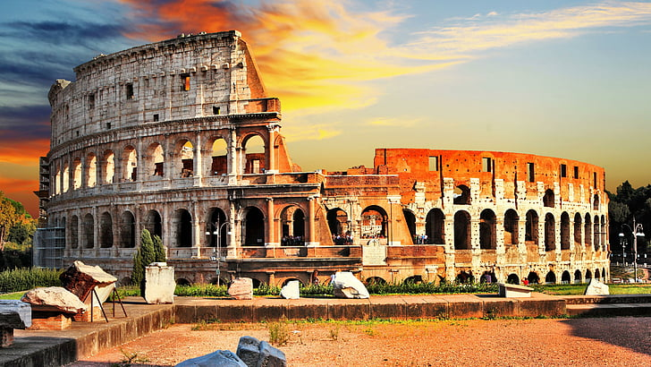

Roma, capitala Italiei, stă mărturie a măreției istoriei umane și a legatului durabil al civilizației. Adesea numită Orașul Etern, influența Romei asupra lumii se întinde pe parcursul a peste două milenii, cuprinzând epoci semnificative precum Regatul Roman Antic, Republica și Imperiul, Evul Mediu, Renașterea și era modernă. Fiecare perioadă a contribuit la bogăția tapețeriei Romei, transformând-o într-un muzeu viu în care trecutul și prezentul se contopesc armonios.
Legendara fondare a Romei datează din anul 753 î.Hr., atribuită figurilor mitice Romulus și Remus. Conform poveștii, cei doi frați gemeni au fost crescuți de o lupoaică, simbolizând rezistența și forța Romei. Regatul Roman, faza cea mai timpurie a civilizației romane, a durat până în anul 509 î.Hr. Răsturnarea ultimului rege, Tarquin Cel Mândru, a marcat tranziția către Republica Romană, o eră pivotală caracterizată de un sistem complex de echilibre și contrapondere implicând consuli, Senatul și adunările populare.
Republica, care a durat până în anul 27 î.Hr., a văzut Roma extinzându-și influența prin cuceriri strategice și alianțe. Figuri precum Iulius Cezar, Cicero și Cato cel Tânăr au avut roluri cruciale în modelarea politicii și culturii romane. Cu toate acestea, asasinarea lui Cezar și luptele de putere ulterioare au anunțat sfârșitul Republicii și ascensiunea Imperiului Roman sub Augustus.
Imperiul Roman, cu teritoriile sale vaste întinzându-se pe tot cuprinsul Europei, Africii de Nord și Orientului Mijlociu, epitomizează apogeul ingineriei, legii și culturii romane. Împărați precum Augustus, Nero, Traian și Constantin cel Mare au lăsat urme de neșters asupra orașului. Minunile arhitecturale din această perioadă, incluzând Colosseumul, Pantheonul și extensa rețea de drumuri și apeducte, reflectă măreția și ingeniozitatea Romei.
Căderea Imperiului Roman de Apus în anul 476 d.Hr. nu a diminuat importanța Romei. În schimb, a devenit un centru al autorității religioase odată cu ascensiunea Bisericii Catolice. Papalitatea a stabilit Roma ca capitală spirituală, influențând doctrina creștină și politica europeană. În timpul Evului Mediu, peisajul arhitectural al Romei s-a dezvoltat, cu construcția de biserici și bazilici monumentale, în special Basilica Sfântul Petru, care rămâne punctul central al Vaticanului.
Renașterea a anunțat o renaștere culturală în Roma, stimulată de patrocinul papilor puternici precum Iulius al II-lea și Leon al X-lea. Acestă perioadă a cunoscut o explozie de realizări artistice și arhitecturale. Tavanul Capelei Sixtine realizat de Michelangelo, frescele lui Raphael și sculpturile lui Bernini au transformat Roma într-un centru al artei renascentiste. Basilica Sfântul Petru, o capodoperă a arhitecturii renascentiste și baroce, simbolizează amestecul de inovație artistică și devotament religios al acestei ere.
Unificarea Italiei în 1870 a marcat un nou capitol pentru Roma ca capitală a națiunii. Eforturile de modernizare din ultima parte a secolului al XIX-lea și începutul secolului al XX-lea au adus îmbunătățiri infrastructurale, păstrând totodată esența istorică a orașului. Dezvoltarea Romei a continuat și în perioada fascistă sub Mussolini, care a inițiat proiecte urbane ambițioase care au remodelat părți ale orașului.
Al Doilea Război Mondial a lăsat Roma relativ nevătămată, fiind declarată un oraș deschis pentru a preveni bombardamentele extinse. Roma postbelică a trăit o renaștere culturală, cimentându-și rolul ca o capitală europeană importantă. Astăzi, Roma este o metropolă aglomerată care armonizează istoria antică cu viața contemporană. Găzduiește instituții semnificative, inclusiv guvernul italian, Vaticanul și diverse organizații internaționale.
Moștenirea culturală a Romei este inegalabilă. Adăpostește o colecție impresionantă de comori de artă și minuni arhitecturale. Muzeele Vaticanului, Muzeele Capitoline și structuri iconice precum Colosseumul, Forumul Roman și Fântâna Trevi atrag anual milioane de turiști. Fiind inima Bisericii Romano-Catolice, Roma atrage pelerini din întreaga lume la Basilica Sfântul Petru și alte locuri sacre.
Instituțiile educaționale și de cercetare ale orașului, precum Universitatea La Sapienza, una dintre cele mai vechi din lume, contribuie la vivacitatea sa intelectuală. În plus, scena culinară a Romei, cu preparate precum pasta alla carbonara și pizza în stil roman, adaugă la farmecul său.